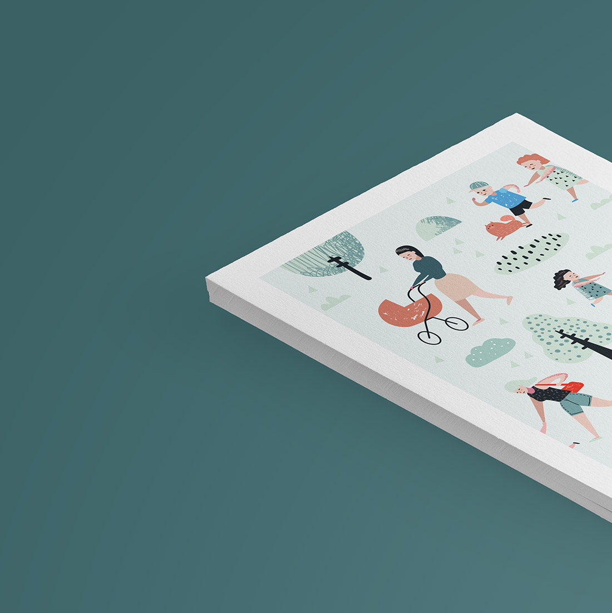
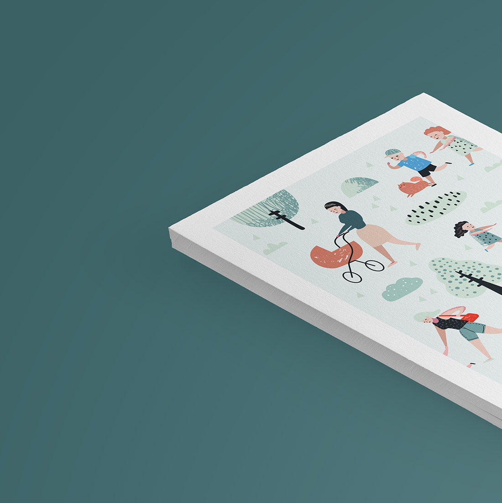

We are Bryson, New York-based art & deign studio
Here at Bryson it only takes a smifgen of imagination and we've prepared ourselves for future challenges. Take a peek and see if you recognize a tademark ingredients of our work.


 
